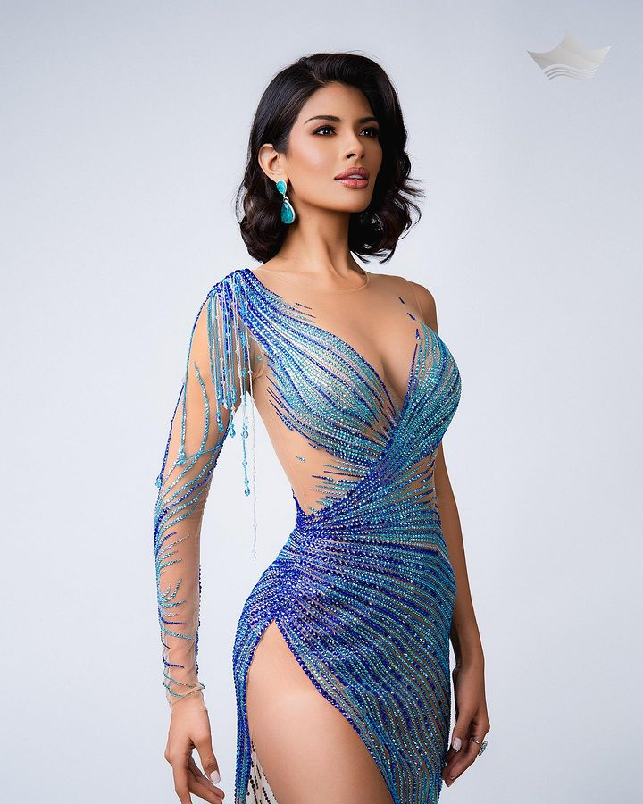

Descubre la gracia y el encanto que caracterizan a nuestra extraordinaria reina, Miss Universo 2023.
Sumérgete en la majestuosidad y la elegancia que define a Sheynnis Palacios, nuestra embajadora de la belleza.
Conoce másSheynnis Palacios, coronada Miss Nicaragua 2023, iluminó la pasarela en la gala preliminar de Miss Universo 2023 con un deslumbrante vestido diseñado por Jared Bermúdez. Adornado con más de 100 mil piedras de cristal en tonos azules y turquesas, este vestido es una obra maestra de la moda.
Sheynnis ha transformado su reinado en una plataforma para el cambio social, dejando su huella en cada evento en el que participa. Explora más sobre su fascinante historia y sus compromisos filantrópicos.
Ver GaleríaSheynnis deslumbró al mundo con un vestido único diseñado por Jared Bermúdez. Cada detalle, desde el diseño hasta la aplicación de más de 100 mil piedras de cristal, hizo que este vestido fuera verdaderamente excepcional. Agradecemos a Jared y a todo el equipo por su arduo trabajo y creatividad.
